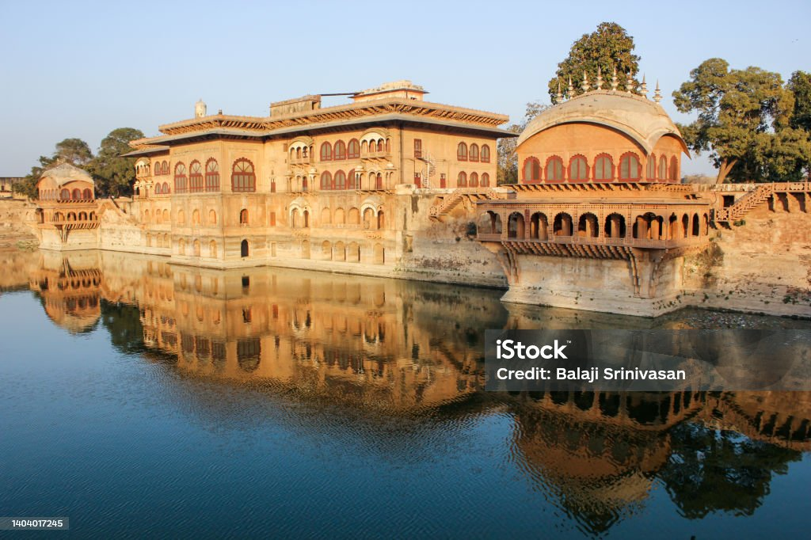

Bharatpur was a tributary of the House of Scindia, and later a princely state under British suzerainty. It was ruled by the Sinsinwar clan of the Hindu Jats. The state was founded by Maharaja Badan Singh in 1722. Suraj Mal played an important role in the development and expansion of the state. During Suraj Mal's reign (1755–1763), the annual revenue of the state was 17,500,000 gold coins.[2].
